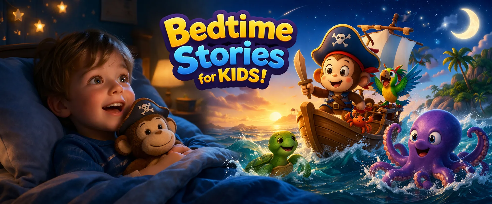

Monkey Milo’s Big Sea Adventure is one of our most loved bedtime stories for children, created to help kids relax, feel safe, and fall asleep peacefully. If you are looking for kids bedtime stories with a gentle adventure and a calm bedtime feel, this story is a wonderful choice.
Far across the sparkling Caribbean Sea, little Milo dreams of becoming a brave pirate captain. With curiosity in his heart and joy in every wave, he builds his own ship, gathers a lovable crew, and sets off on a magical journey across glowing waters and tropical islands.
Along the way, Milo faces a wild storm, discovers a mysterious treasure map, and meets a playful giant octopus — all in a way that feels exciting but never overwhelming. That balance makes it one of the most comforting bedtime stories for kids and a strong fit for peaceful nighttime routines.
As the adventure gently settles under soft starlight, the story becomes a perfect short bedtime story that helps children relax their minds and drift naturally into sleep.
✨ Perfect for:
• Bedtime stories for children before sleep
• Calm nighttime routines
• Quick bedtime stories on busy evenings
• Parents looking for free bedtime stories
Cozy Tales focuses on bedtime stories for children that are calm, gentle, and designed specifically for sleep. Each story uses soft narration, peaceful pacing, and comforting visuals to support healthy bedtime habits.
Parents who want reliable children bedtime stories often look for something safe, soothing, and easy to enjoy every night. Monkey Milo’s Big Sea Adventure was created to give families that warm bedtime experience.